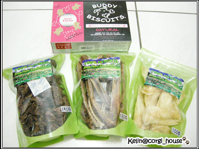
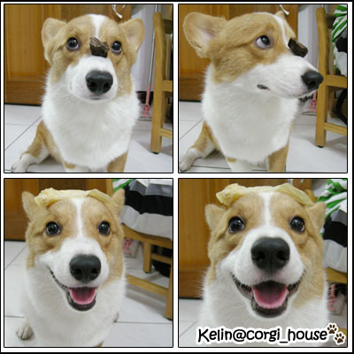
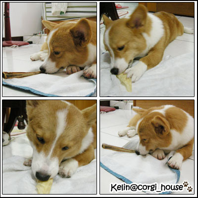
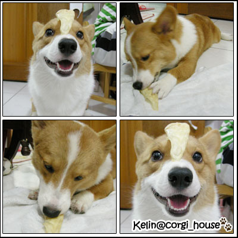

之前看到很多狗子都吃過標榜天然跟有機的紐西蘭系列的零食
看起來好好吃歐!!
剛好前陣子跟到狗友會的零食團購~咖心咖心!
因為都沒吃過也怕摩卡卡不愛~所以只買了 小薑餅人/甜薯、羊耳、牛肋排、鹿肺
很克制了厚!!!^^
一拿到手回家立刻都拆了讓摩卡卡try一下

上面那個"歐罵罵"像豆干的是鹿肺~摩卡還蠻喜歡的~
聞起有點香香的~像中藥味????
不會很硬~卡卡大概15秒就吃掉一個了!!所以我拿來當訓練的獎品用
下面的是羊耳~媽呀!!味道真的很重...騷呀!!!(應該沒有狗不愛的吧!)
那天在房間讓他吃羊耳~吃完房間居然飄著一股羊騷味兒...好可怕一一!
而且我家小孩吃東西很慢~吃完一根羊耳差不多要40分鐘
哇哈哈~是最好打發他的零食啦!!
(因為老木每次只要看電視~他會立刻咬球丟給我~如果不玩就會把所有玩具都咬過來給你挑)

長長的是牛肋排~聞起來我覺得有點奶香味兒
我很喜歡!!!吃完一根大概也要20分鐘~蛤不錯
這次買的三種反應都很不錯吶!!!份量也不會覺得很燒錢

只有小薑餅人/甜薯口味的餅乾..摩卡卡不太捧場..@@
一個大概比一塊錢小一點
聞起沒什嘛味道!吃起來有點粉粉的也沒什嘛味道~以人類的角度我個人覺得很難吃!哈哈
我想大薑餅人搞不好會好一點!!而且要選花生口味
這包我想應該會去公園跑跑時候請其他小捧油吃嘍!!!必竟我家這隻嘴真的很挑...
不過還是很謝謝amy姐的幫忙!!剛好她在木柵
我自取也很方便又可以省運費!!!thank u ^^